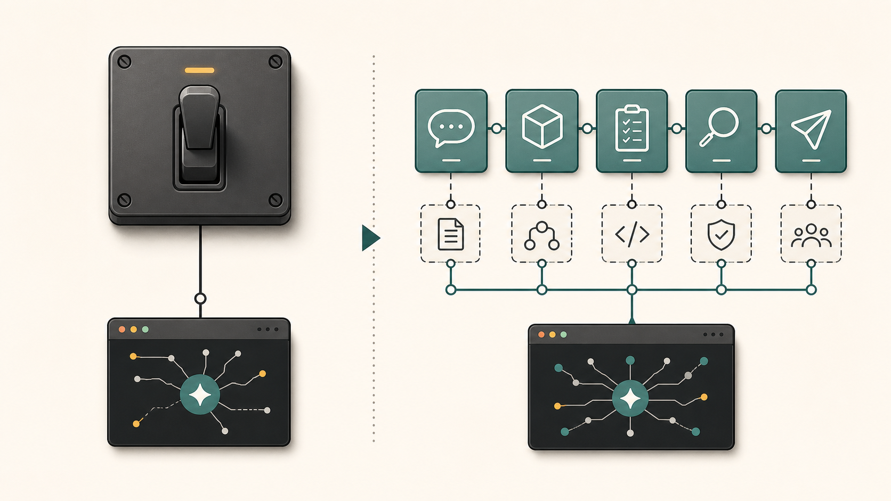
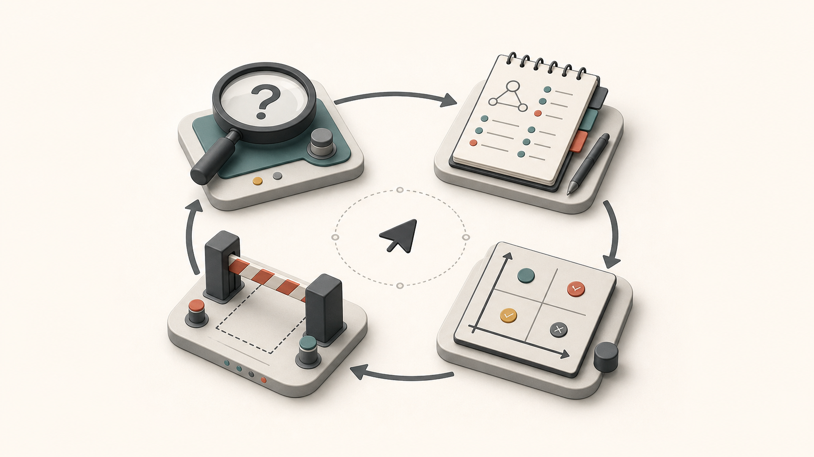

为什么 Matt Pocock 的 Skills，可以替代 Superpowers 的一部分
今天装了一套很有意思的 Skills。
来自 Matt Pocock。
如果你写 TypeScript，应该对这个名字不陌生。他是 Total TypeScript 的作者，也是那种很典型的“把复杂工程经验讲得非常清楚”的人。
这套仓库的名字就叫 skills，README 里有一句话很直接：
Skills for Real Engineers.
后面还补了一句，大意是：这些是他每天真实使用的 agent skills，不是 vibe coding。
这个定位挺关键。
因为现在社区里已经有很多 Agent workflow 方案了。GSD、BMAD、Spec-Kit、Superpowers，各有各的口号。它们共同解决一个问题：不要让 Agent 一上来就开干，先把需求、计划、验证、交付这些步骤规范起来。
这当然是对的。
但用多了以后，我越来越有一个感觉：
很多 workflow 系统的问题，不是它没有流程，而是它太像一个流程系统了。
一上来就接管你的工作方式。
先进入某个模式，再生成某种文档，再走某种阶段，再按某个模板产出。它确实能减少失控，但也很容易把 Agent 变成一个认真执行仪式的助手。
有时候你只是想修一个小 bug。
它却像要启动一个咨询项目。
Matt Pocock 这套 Skills 有意思的地方就在这里。它不是试图发明一个宏大的 Agent 方法论，而是把真实工程里最容易翻车的几个环节拆成很小、很清楚、可以组合的工作习惯。
换句话说，它不是一个“超级流程”。
它更像一套工程肌肉记忆。
这也是为什么我觉得，它在很多场景下可以替代 Superpowers 的一部分。
但这里要先说清楚。
不是说 Superpowers 没用了。
而是说，如果你用 Superpowers 的主要目的，是让 Agent 不要乱来、不要漏流程、不要跳过澄清、不要写完就算完，那么 Matt Pocock 这套 Skills 其实给了一个更工程化、更可维护的替代方案。
它替代的不是记忆系统，不是权限系统，也不是你所有垂直场景里的个人 Skills。
它替代的是那层最常见的“流程纪律层”。
Superpowers 像总开关。
Matt Pocock 这套，更像工具箱。
Superpowers 解决的是纪律问题
先说 Superpowers。
我理解它最核心的价值，是给 Agent 加一层纪律。
比如“任何任务开始前都要先检查有没有适用 Skill”，“只要有一点可能适用，就必须调用”，“不能因为任务看起来简单就跳过流程”。
这类规则很有用。
尤其是在 Agent 很容易自信开干的情况下，它能强行把 Agent 拉回一个更克制的状态。
你让它修 bug，它不能上来就改。
你让它做功能，它不能直接写代码。
你让它写文章，它也应该先确认风格、材料和目标。
这背后的判断是对的：Agent 最大的问题从来不是不会做，而是太容易在不该确定的时候假装确定。
最近一些研究也在反复指向这个问题。比如针对 DevOps 指令欠规格的测试里，Agent 在目标不清、对象不清、影响范围不清的时候，并不总是停下来问问题，反而经常继续猜。另一个关于 out-of-scope action 的研究，也在测类似问题：面对良性任务，Agent 有时会做出超出授权范围的动作。
所以，Superpowers 这类“先找流程、再执行”的纪律层，是有现实意义的。
问题在于，纪律层不能替代工程判断。
它能告诉 Agent：你应该先检查并调用相关 Skill。
但它不能天然保证：这个 Skill 本身是好的。
它能告诉 Agent：不要跳过流程。
但它不能天然保证：这个流程对当前任务足够细、足够短、足够贴近真实工程。
这就像公司里贴满“上线前必须检查”的制度。
制度没错。
但真正决定质量的，还是检查清单是不是抓住了关键风险，测试是不是测在正确边界，Review 是不是看需求也看代码设计。
Superpowers 管的是“要不要走流程”。
Matt Pocock 这套 Skills 更关心“流程到底怎么走”。
它不是一个大流程，而是一组小闭环
我装完以后看了一下目录。按仓库 README 当前展示的稳定部分，主要分两类。
一类是 Engineering。
里面有 grill-with-docs、domain-modeling、tdd、code-review、codebase-design、to-prd、to-issues、triage、prototype、diagnosing-bugs、research、improve-codebase-architecture 等。
另一类是 Productivity。
里面有 grill-me、grilling、handoff、teach、writing-great-skills。
官方 README 里的安装方式是 npx skills@latest add mattpocock/skills，然后选择要安装到哪些 coding agents。因为我这里是在 Codex 环境里用，所以我没有直接把整个仓库粗暴复制进去，而是把 engineering 和 productivity 里这些稳定 Skills 安装到了本地 Codex 的全局 skills 目录。
你看这些名字，会发现它没有发明太多新词。
基本都是工程师本来就该做的事。
需求没想清楚，就 grill。
领域语言混乱，就 domain modeling。
要写代码，就 TDD。
要验收改动，就 code review。
要拆任务，就 to-issues。
要写 PRD，就 to-prd。
要交接上下文，就 handoff。
这套设计很朴素。
但我反而觉得它比很多宏大框架更强。
因为它尊重了一个事实：真实软件工程不是一条笔直的流程，而是一堆小闭环的组合。
你不是每次都需要完整跑一遍“需求分析 → 架构设计 → 任务拆解 → 编码 → 测试 → Review → 发布”。
有时候你只需要把一个模糊想法问清楚。
有时候你只需要把一个 bug 复现出来。
有时候你只需要给当前 diff 做一次 Review。
有时候你只需要把这次对话压缩成下一轮能接上的 handoff。
好的 Skill 系统，应该允许这些动作独立存在。
这就是 Matt Pocock 这套和 Superpowers 最大的差别。
Superpowers 更像在 Agent 外面套了一个“必须守纪律”的外骨骼。
Matt Pocock 更像把纪律拆进每个动作里，让每个动作自己带着边界、输入、输出和停止条件。

最重要的 Skill，是先把人问明白
这套里面最核心的，应该是 grill-me 和 grilling。
它们做的事情很简单：不断追问用户，直到双方对计划或设计达成共同理解。
听起来像废话。
但这其实是 AI 编程里最缺的一步。
我们经常以为自己已经说清楚了。
“帮我加一个导出功能。”
“把登录流程优化一下。”
“这个页面做得高级一点。”
这些话在人类沟通里都能凑合，因为人类会带着组织背景、产品常识、历史经验去补全。但 Agent 不一样。它会把这些模糊词硬翻译成某种实现。
于是你得到一个确实能跑、但完全不是你想要的东西。
grilling 这个 Skill 的关键不是“多问问题”。
它的关键是几个约束：
一次只问一个问题。
如果问题可以通过读代码回答，就去读代码，不要问用户。
在每个问题里给出推荐答案。
没有确认共同理解之前，不要执行计划。
这几个点很工程。
很多 Agent 问问题问得像调查问卷，一次甩十个问题给你，看起来很专业，其实用户很难回答。Matt 这套反过来，一次只解决一个分支，而且每次都带推荐答案。
这就像一个好的高级工程师在做需求澄清。
他不会说：“请补充所有背景。”
他会说：“这里有两种可能，我建议走 A，因为它对现有模块影响更小。你确认吗？”
这比“必须先进入 Plan Mode”更具体。
也更容易真的提升结果。
它把“领域语言”当成一等公民
我最喜欢的是 domain-modeling。
这个 Skill 做的不是架构图，也不是数据库设计。
它做一件很小但很关键的事：维护项目里的领域语言。
比如用户说“account”，它会追问你到底指 Customer 还是 User。比如你在对话里讲的业务规则和代码不一致，它会指出来。比如一个术语确定了，它会立刻写进 CONTEXT.md，而不是等到最后再整理。
这看起来不酷。
但非常重要。
Agent 为什么啰嗦？
很多时候不是因为模型废话多，而是因为它没有项目里的共同语言。
人类团队工作久了以后，会自然形成很多压缩词。
“物化级联”。
“草稿态订单”。
“影子账号”。
“回灌任务”。
这些词外人听不懂，但团队内部一说就懂。它们不是黑话，它们是压缩过的上下文。
Agent 如果没有这层语言，只能每次用很长的话重新描述一遍。
更麻烦的是，它会用错词。
一个词用错，后面的代码结构、文件命名、测试命名都会跟着偏。
所以 Matt Pocock 在 README 里把 shared language 单独拿出来讲，我觉得是非常准确的。它不是文档洁癖，而是在给 Agent 降低推理成本。
Superpowers 可以强制 Agent 去找 Skill。
但 domain-modeling 这种 Skill，直接改善的是 Agent 和项目之间的语言接口。
这就是更底层的东西。
TDD 不是口号，而是测试边界
很多 workflow 系统都会说自己支持 TDD。
但大部分时候，TDD 会被写成一句很空的规则：
先写测试，再写实现。
问题是，Agent 真按这句话做，经常写出一堆没用的测试。
测私有方法。
Mock 内部实现。
快照一大坨 UI。
甚至写出“自己证明自己”的 tautological test。
看起来红绿循环跑完了，实际上测试没有提供任何真实约束。
Matt Pocock 的 tdd Skill 好就好在，它没有把重点放在“必须先写测试”这个仪式上，而是把重点放在 seam。
也就是测试边界。
它要求先确认：我们到底在什么公共接口上观察行为？哪些 seam 是值得测的？测试应该验证行为，而不是内部结构。
这个判断太重要了。
因为 AI 写代码最大的风险之一，就是为了让测试过而修改实现，甚至为了实现而塑造测试。测试如果一开始就站错边界，后面越跑越稳，只是在稳定地证明一个错误设计。
tdd Skill 还有一个很好的约束：不要一次性写一堆测试再实现一堆功能，而是一个 vertical slice 一个 vertical slice 地做。
一个测试。
一个最小实现。
再根据这一轮学到的东西进入下一轮。
这就把 TDD 从口号变成了反馈回路。
Superpowers 能提醒 Agent “你该用 TDD”。
但这个 Skill 告诉 Agent：什么样的 TDD 才值得做。
差别就在这里。

Code Review 被拆成两条轴
另一个很有代表性的，是 code-review。
它不是简单说“帮我 review 一下代码”。
它把 Review 拆成两条轴：
一条是 Standards。
也就是代码是否符合项目标准、是否有明显 code smell。
另一条是 Spec。
也就是它到底有没有实现原始需求，有没有漏需求，有没有做多。
这件事我特别认同。
因为很多 Review 混在一起以后，很容易互相遮蔽。
代码写得很漂亮，但需求实现错了。
或者需求实现对了，但设计一团糟。
这两种情况都常见。
如果 Review 只给一个总分，Agent 很容易把它们搅在一起。Matt 这套要求两个维度并行检查，最后并列报告，不要强行合并排序。
这其实是很成熟的工程判断。
它承认软件质量不是单轴的。
同一个 diff，可以在“代码标准”上通过，在“需求符合度”上失败。也可以反过来。
我觉得这类 Skill 的价值，不在于它写了多少条 smell。
而在于它把一个模糊动作拆成了可执行的评审结构。
这比一句“请严格 review”有效得多。
它可以替代 Superpowers 的哪一层？
讲到这里，我们可以回到标题。
为什么说它可以替代 Superpowers？
准确说，它替代的不是所有东西。
它替代的是 Superpowers 里最常用、也最容易变成“总开关依赖”的那一层：用外部纪律约束 Agent 每次先找流程、先澄清、先验证。
Superpowers 的好处是简单粗暴。
只要开始任务，就先找 Skill。
只要有可能适用，就必须用。
这对新手很友好，因为它能防止 Agent 乱跑。
但长期看，它有一个问题：你会越来越依赖一个总规则来维持秩序。
而 Matt Pocock 这套的思路是反过来的。
不要只靠总规则。
把秩序写进每个具体动作里。
澄清需求的时候，有 grilling 的规则。
维护术语的时候，有 domain-modeling 的规则。
写代码的时候，有 tdd 的规则。
诊断 bug 的时候，有 diagnosing-bugs 的规则。
Review 的时候，有 code-review 的规则。
拆任务的时候，有 to-issues 的规则。
交接上下文的时候，有 handoff 的规则。
每个环节都小。
但每个环节都有自己的边界。
这就更像真实团队。
一个成熟团队不会只靠一句“大家要工程化”来工作。它会在需求评审、测试策略、代码审查、事故复盘、架构决策这些环节里，各自沉淀具体习惯。
Agent 也一样。
真正可持续的 Agent 工作流，不应该只有一个全局魔法按钮。
它应该是一组可以被触发、可以被组合、可以被修改、可以被替换的小工具。
Matt Pocock 这套 Skills 就是这个方向。
但它也不是银弹
当然，我不建议把它神化。
这套东西也有明显边界。
第一，它更偏工程协作，不是通用生产力大全。
如果你的任务是写公众号、做图片、发小红书、整理微信群聊，它不是为这些场景设计的。你还是需要自己的垂直 Skills。
第二，它默认你愿意接受比较强的工程纪律。
比如先 grill，再执行；先确认 seam，再写测试；Review 分 Standards 和 Spec。对于认真做项目，这是好事。但如果你只是快速试一个 demo，可能会觉得它有点“工程师味太重”。
第三，它需要项目里有配套文档。
比如 CONTEXT.md、ADR、issue tracker 配置。如果这些东西没有，很多 Skill 仍然能工作，但威力会打折。
所以更准确的建议是：
不要把它当成替代所有 Skills 的“神包”。
把它当成 Agent 工程工作流的基础层。
在它上面，再叠你自己的业务 Skills、写作 Skills、发布 Skills、图像 Skills。
这才是比较舒服的用法。
我的判断
如果你现在已经在用 Superpowers，我觉得可以做一个迁移实验。
不是立刻删掉。
而是先问自己一个问题：
我用 Superpowers，到底是在解决什么？
如果你只是需要一个“强制 Agent 先想一想”的总规则，那 Superpowers 仍然很好。
但如果你已经开始关心更细的东西：
需求怎么澄清。
术语怎么沉淀。
测试怎么落在正确边界。
Review 怎么同时看代码质量和需求符合度。
任务怎么拆成真正能并行的小 issue。
上下文怎么交接给下一轮 Agent。
那 Matt Pocock 这套 Skills 更值得认真装上试试。
因为它不是在告诉 Agent：
“你要守规矩。”
它是在告诉 Agent：
“这里有一套工程师真正会用的规矩。”
这两个东西差别很大。
前者让 Agent 不那么乱。
后者让 Agent 更像一个能进团队干活的人。
我现在越来越觉得，Agent 时代最稀缺的不是提示词，也不是模型调用技巧。
是把工程经验拆成可复用工作流的能力。
Superpowers 是一个很好的提醒：别让 Agent 裸奔。
Matt Pocock 这套 Skills 往前走了一步：别只提醒它穿衣服，直接把工具箱、工作台、检查表和团队语言都放到它手边。
这就是为什么它可以替代 Superpowers 的一部分。
不是因为它更“强制”。
而是因为它更工程。
参考
- Matt Pocock skills 仓库：https://github.com/mattpocock/skills
- 仓库 README 对 Skills 定位、Quickstart 和问题拆解的说明：https://github.com/mattpocock/skills#readme
- Engineering skills 列表：https://github.com/mattpocock/skills/tree/main/skills/engineering
- Productivity skills 列表：https://github.com/mattpocock/skills/tree/main/skills/productivity
- UnderSpecBench 论文摘要，关于欠规格 DevOps 指令下 Agent 容易猜测的问题：https://arxiv.org/abs/2607.02294
- OverEager-Bench 论文摘要，关于 Agent 越界执行的问题：https://arxiv.org/abs/2605.18583